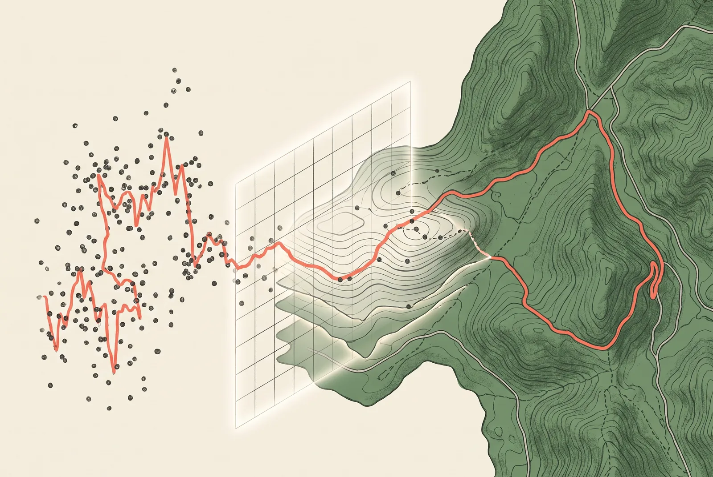

先给判断
- 路线分析的难点不是多画几张图，而是建立统一的数据事实。
- 先做静态路线可信度，再接天气、路况等动态能力。
- WGS84 保存事实坐标，GCJ-02 只负责国内地图展示。
- 云端预计算，小程序读取稳定结果并轻量渲染。
同一条骑行路线，在活动详情页像一张海报，在完整分析页却像另一条路：轮廓不同、海拔节点不一致，地图上的轨迹还可能偏到道路外。用户看到的是视觉问题，工程上暴露的却是同一个根因——项目里没有一份被所有页面共同信任的路线事实。
此里的路线能力不该从“增加信息卡片”开始，而要从统一数据底座开始。 GPX 提供了轨迹，但它没有自动解决坐标、抽稀、海拔噪声、关键地点、缓存版本和动态数据有效期。
01GPX 只是原料
GPX 能给出经纬度、海拔和时间等基础点位。它适合做路线事实的起点，却不是可以直接交给每个页面自由解释的最终结果。
如果活动详情页自己抽稀一次，完整分析页再计算一次，两个页面即使读取同一个文件，也可能得到不同的路线轮廓。异常点过滤、平滑窗口和累计爬升算法只要有一处不同，坡顶公里数就会漂移。
可靠做法是把原始 GPX 与分析结果分开。原始文件保留用于追溯，云端生成带版本号的标准结果；活动详情、完整分析和骑行凭证读取同一版本，不再各算一遍。
| 数据层 | 保存内容 | 主要用途 |
|---|---|---|
| 原始层 | GPX 文件、导入时间、来源信息 | 追溯、重算、异常排查 |
| 标准层 | 清洗后的 WGS84 轨迹与里程海拔序列 | 统一计算事实 |
| 展示层 | GCJ-02 轨迹、抽稀点、关键地名与图表节点 | 地图、海拔图和路线海报 |
| 动态层 | 天气、风场、路况快照及有效期 | 出发前建议与风险提示 |

02地图漂移不是一个偏移量
GPX、OpenStreetMap、高程数据和多数天气接口通常使用 WGS84；腾讯地图、高德地图在中国大陆的展示使用 GCJ-02。把 WGS84 轨迹直接画到国内商业地图上，轨迹就会与道路错位。
最危险的修法是“看起来差多少，就整体平移多少”。这种偏移不是固定常量，同一个补偿值换到另一座城市或另一段路线就可能失效。
天气、高程、开放 POI 与 GPX 在 WGS84 空间关联；腾讯或高德的地点和地图覆盖物在展示层使用 GCJ-02。系统需要记录每个字段的坐标系，而不是依赖调用方猜测。
禁止做法：不覆盖原始坐标，不做多次往返转换，也不用人工固定偏移量修地图。
03关键地名来自路线语义
骑行者很少用“第 742 个轨迹点”理解路线。他们关心的是“出发后 18 公里到坡脚”“补给点之后连续爬升 6 公里”“坡顶附近可以休息”。路线分析要把几何点转换成可行动的路线语义。
关键节点可以先从确定性规则产生：起终点、海拔局部峰值、长坡起止、方向明显变化、累计里程节点。再用地点服务补充地名，必要时从开放数据离线补充卫生间、便利店和自行车服务点。匹配失败时保留公里数与坐标，不编造地点。
同一组关键节点必须同时服务地图、海拔图和文字说明。用户点击海拔图上的坡顶，地图应定位到同一处；活动详情展示的最高点，也应与完整分析页一致。
04动态信息必须承认会过期
天气、风向、降水和道路事件与路线几何不同。路线可以数月不变，天气预报每隔数小时就会更新，道路事件还可能缺失或延迟。把它们写进同一份永久分析结果，会让用户在出发前看到过期判断。
动态能力应保存为独立快照，每份数据至少带采集时间、目标时间窗、来源、有效期和状态。超过有效期后，界面显示“数据已过期”或停止给出结论；第三方请求失败时，静态路线分析仍然可用。
| 能力 | 变化速度 | 失效处理 | 推荐阶段 |
|---|---|---|---|
| 路线几何 | 低 | 版本变更后重算 | M0：先稳定 |
| 海拔与坡度 | 低 | 算法升级后重算 | M0：先稳定 |
| 地点与补给 | 中 | 缓存过期后刷新 | M1：逐步补充 |
| 天气与风场 | 高 | 过期即降级 | M1：快照接入 |
| 事故与封路 | 很高 | 来源不足时明确不可用 | M2：验证后开放 |
05为什么不把计算都放在小程序
一种看似更快的方案是：小程序下载 GPX，然后在端内完成解析、平滑、海拔和关键点计算。它省掉了早期后端工作，也方便页面快速试验。
这个方案在原型阶段成立。进入真实活动后，GPX 文件大小、设备性能、网络状况和微信运行限制都会放大差异。算法升级后，旧页面和新页面还可能得到不同结果。
云端预计算增加了任务状态、结果版本和存储管理，换来的是可重复、可缓存、可观测。即使动态 Provider 暂时关闭，基础路线、海拔和关键节点仍能稳定打开。
06真正的反对意见
反对这套方案的最好理由不是“架构太复杂”，而是项目当前规模可能不需要完整数据平台。只有少量活动、路线更新不频繁时，一套本地解析函数加缓存就能满足使用，过早建设 Provider 抽象、任务队列和版本迁移会增加维护负担。
这个判断成立一半。此里现在不需要一次建成通用 GIS 平台，但已经需要统一路线事实。活动详情、完整分析、海报和骑行凭证正在共享同一批数据；地图漂移与 GPX 下载问题也说明，页面级修补的成本开始超过契约化处理。
首期不做“大平台”，只做最小底座：标准坐标、统一解析、版本化结果、跨页面复用和可验证下载。天气、POI、路况与开源路由引擎放在可关闭 Provider 后面，完成授权、配额、缓存、隐私和稳定性评审后再逐项开放。
07先让路线可信
路线分析页可以很丰富，但丰富不是第一目标。用户先要相信轨迹走在正确道路上，相信活动详情与完整分析说的是同一条路线，相信坡顶公里数不会因为换了页面而变化。
这改变了开发顺序：先完成 GPX 下载、坐标转换、统一分析结果和缓存版本，再接地点、高程补全、天气与风场。施工、事故和封路信息最后进入验证，因为这类数据最容易让“有展示”被误解为“可信覆盖”。
当数据事实稳定后，地图、海拔图、动态海报和骑行人物建议都只是不同的表达层。此里真正需要建设的，不是一张更满的页面，而是一条从 GPX 到用户判断都能被追溯的路线链路。